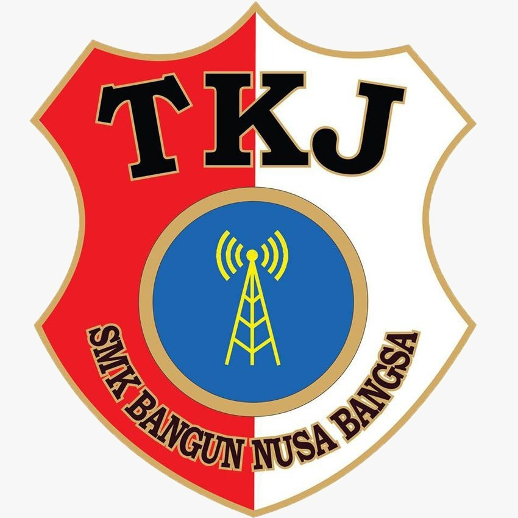

SMK Bangun Nusa Bangsa
SMK Bangun Nusa Bangsa
Mencetak generasi penerus bangsa yang unggul, berkarakter, dan siap menghadapi tantangan dunia kerja melalui pendidikan kejuruan berkualitas tinggi.

SMK Bangun Nusa Bangsa Cibinong adalah lembaga pendidikan kejuruan yang berkomitmen mencetak lulusan kompeten, beretika, dan siap terjun ke dunia industri. Dengan fasilitas modern dan tenaga pendidik berpengalaman, kami hadir untuk membangun generasi emas Indonesia.
Menjadi SMK unggul yang menghasilkan lulusan berkualitas, berkarakter, dan berdaya saing tinggi di tingkat nasional maupun global.
Menyelenggarakan pendidikan kejuruan berkualitas, membentuk siswa berkarakter Pancasila, dan menjalin kemitraan erat dengan dunia industri.
Tiga program keahlian dirancang untuk mempersiapkan siswa menghadapi dunia kerja yang terus berkembang.
Mempelajari perawatan, perbaikan, dan diagnosa kendaraan ringan bermotor dengan teknologi terkini sesuai standar industri otomotif.
Pelajari Lebih Lanjut
Menguasai instalasi, konfigurasi, dan manajemen jaringan komputer serta sistem informasi untuk era digital yang terus berkembang.
Pelajari Lebih LanjutMembekali siswa kemampuan pengelolaan keuangan, akuntansi bisnis, perpajakan, dan administrasi perkantoran yang profesional.
Pelajari Lebih LanjutTim TKJ SMK Bangun Nusa Bangsa berhasil meraih juara pertama dalam ajang Lomba Kompetensi Siswa tingkat Provinsi Jawa Barat tahun ini.
SMK BNB resmi menandatangani perjanjian kerjasama dengan 5 perusahaan otomotif nasional untuk program magang dan rekrutmen lulusan.
Tahun ajaran baru 2026/2027 SMK Bangun Nusa Bangsa dibuka dengan upacara dan orientasi siswa baru yang meriah dan penuh semangat.
Didukung fasilitas modern untuk menunjang proses pembelajaran yang optimal.
Wujudkan impianmu bersama kami. Daftarkan diri sekarang dan jadilah bagian dari keluarga besar SMK Bangun Nusa Bangsa Cibinong.